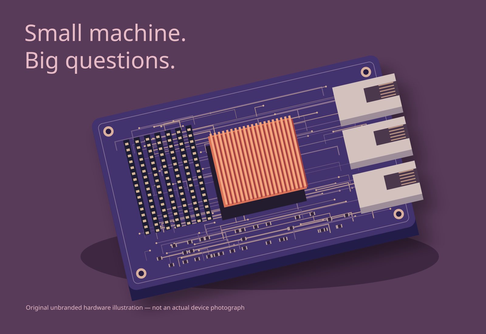

After-hours
curiosity.
Raspberry Pi, homelab servers and the appeal of understanding the parts for yourself.
Personal interests / Illustrative hardware / No project or performance claims

A smaller place
to ask questions.
A small computer can make a large topic feel approachable. My interest in Raspberry Pi and homelab servers is about that opportunity: looking beneath the application and considering the machine, the network and the responsibilities around them.
What has to stay running? Which parts depend on each other? What would I need to know if something stopped responding? These are useful questions even when the setting is personal rather than a production system.
This page is an expression of that curiosity, not a documented build log. The hardware image is an original illustration; it should not be read as evidence of equipment I own or a configuration I have deployed.
There is a particular pleasure in making room for a question you don’t yet know how to answer.
Curiosity connects
back to craft.
Software depends on more than software. A personal server is a way to think about those surrounding layers: how a service starts, where information lives, and what maintenance asks of the person responsible for it.
I do not need to turn every interest into a polished case study. Some explorations matter because they make the next technical conversation better informed. That is the spirit of this edition.
Next: tools, with judgment Return to the collection